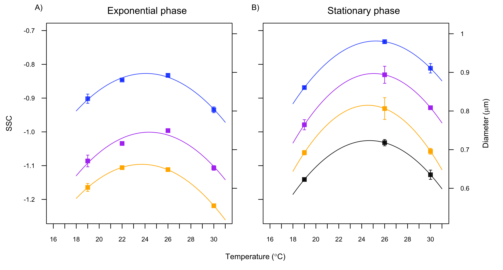

Ángel López-Urrutia
Centro Oceanográfico de Gijón
Instituto Español de Oceanografía
“Transcriptomic Experiments on Climate Change Acclimation of Marine Microorganisms"


600nm
- 0.11 µm³
- 25 fgC

700nm
- 0.18 µm³
- 40 fgC
- x1.6

- Bergmann's rule: Individuals in colder environments grow more slowly but are larger as adults.
- Ectothermic organisms usually have smaller body size when reared in warmer conditions.


